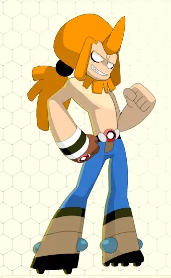
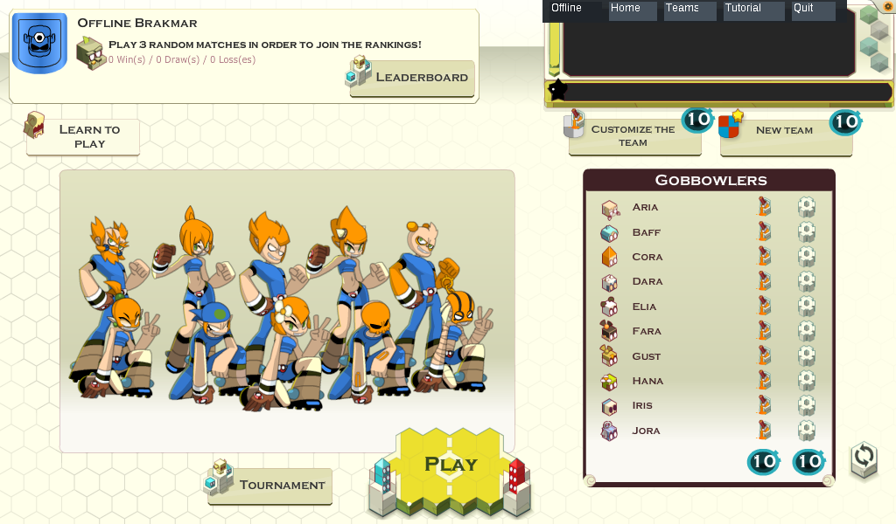

LE CERVEAU AVANT LE CRAMPON.
Des actions à préparer, des passes à tenter et des pouvoirs de classe à bien placer. Un sport tactique où réfléchir peut encore vous sauver les tibias.
Douze ans d’arrêt de jeu, ça suffisait.
Rechaussez les crampons
: le Boufbowl revient.
Le ballon a survécu. Pour vos dents, on
ne promet rien.

Le client original reprend du service. Les crampons aussi.
Composez votre équipe, préparez vos actions, puis regardez votre génie tactique rencontrer un adversaire. Généralement à pleine vitesse.
Des actions à préparer, des passes à tenter et des pouvoirs de classe à bien placer. Un sport tactique où réfléchir peut encore vous sauver les tibias.
Créez vos personnages, ajustez leur apparence et rassemblez un club qui vous ressemble. On ne juge pas. Enfin, pas avant le match.
Matchs, ladder, tournois ponctuels ou récurrents : le tableau d’affichage attend vos exploits. Les canaux de discussion aussi.
Les interfaces d’origine reprennent vie.
Les choix douteux de
couleurs sont toujours les vôtres.


Le chantier a aussi son uniforme : environ deux personnages sur trois empruntent encore le corps des Crâ. Les autres patrons de couture sont recherchés.
Le client Flash d’origine a été sauvé des vestiaires du temps. Dans son sac : à peu près la moitié des ressources. Depuis, on recoud les maillots, on remet le serveur sur pieds et on tente de rendre au Boufbowl sa bonne vieille mauvaise humeur.
Ce n’est pas encore le grand lancement. C’est une reconstruction jouable, en évolution, sur Web, Android et Desktop. Une belle occasion d’entrer dans l’équipe avant le coup d’envoi officiel.
Les personnages du tutoriel sont complets : Crâ homme et femme, Enutrof femme, Eniripsa femme et Iop homme.
Les autres ont retrouvé leurs illustrations plein écran dans toutes leurs poses, mais pas encore toutes leurs pièces animées, couleurs et textures.
ON CHERCHE DES BRAS. LITTÉRALEMENT.Les pouvoirs, les probabilités de lancer, de réception et de chute doivent retrouver leurs sensations d’antan.
Pour l’instant, de vieilles vidéos YouTube servent d’arbitres. Souvent en 240p. Vos souvenirs et vos tests feront mieux que les pixels.
TESTEURS, ARCHIVISTES ET VIEUX BRISCARDS : À VOUS DE JOUER.Le client originel, des correctifs ActionScript 3, un serveur actuellement écrit en Python, une base SQLite et des ressources supplémentaires. Le serveur pourra évoluer ; la priorité reste de retrouver le jeu. Le dépôt GitHub est encore privé. Demandez l’accès pour contribuer ; l’ouverture du code est prévue après le nettoyage du projet et son lancement.
Le jeu se reconstruit sur Web, Android et Desktop. Les versions natives sont distribuées au fil des builds de test.
Un navigateur, une équipe, un peu de témérité. Le vestiaire est au bout du clic.
JOUER DANS LE NAVIGATEUR ↗Version en restauration · ordinateur conseilléLa tactique au bout des doigts. Les crampons ne sont pas fournis avec le téléphone.
DEMANDER LE BUILD ↗APK · Android 6+ · ARM64 · sur demandeLe client Flash retrouve un écran digne de ses grosses bottes. À l’ancienne.
DEMANDER LE BUILD ↗Client natif Flash · disponibilité selon plateformePas besoin de marquer en finale pour sauver le Boufbowl. Un dessin, une archive, un test ou un bon montage peut faire gagner toute l’équipe.
RETROUVEZ-NOUS SUR LE DISCORD DOFUS 3 ↗ BÉNÉVOLAT · PROJET NON COMMERCIAL · BONNE HUMEUR CONSEILLÉEBoufbowl est un fan game indépendant, non commercial et non affilié à ANKAMA Games. Les noms, personnages et éléments d’origine appartiennent à leurs ayants droit.
« Tant que c’est fait avec respect, que c’est non commercial et que ça ne cannibalise pas notre univers, je ne vois aucun problème. »
— Tot, propos du 12 octobre 2026 rapportés par le porteur du projet. Source publique à documenter. Cette citation n’est pas présentée comme une autorisation spécifique du projet ou une affiliation.
LE SIFFLET A SONNÉ.
À VOUS DE JOUER. ↗LES DENTS DE LAIT NE SONT PAS UNE ARMURE.